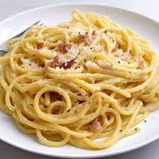

Et oui pour cela il faudra simplement préparer les ingrédients suivants:
Occupez vous comme vous voulez pendant que les pâtes cuisent mais en tout cas commencer par les oignons
Une fois les oignons légèrement doré ajouté la crème fraiche
Normalement à ce stade la vous devriez égouter les pâtes et les faire reposer saler poivrer dans la casserolle par la suite
Ajouter la viande laissez cuire quelque minutes ~ 5 à peu prés
Et voilà une belle carbo toute bo
 Retour on the main menu